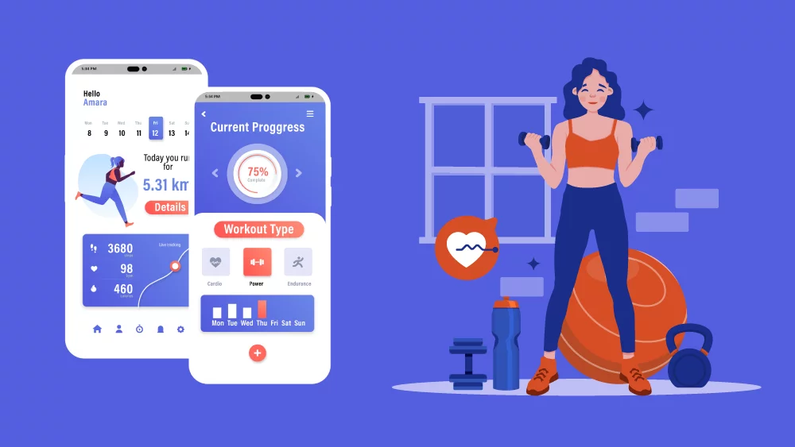

Project Overview
Welcome to the Health and Fitness Tracking Application project! This system helps users track fitness goals, log workouts, and share progress within a community platform. This website presents the system's design, from the requirements to the high-level architecture and the rationale behind key design choices.
Team Members:
- Sahil Sharma - sahilsharma@vt.edu
- Shail Shah - shails@vt.edu
- Ritwik Sood - ritwiksood@vt.edu
- Uma Sruthy Gajula - gumasruthy@vt.edu
- Udbhaav Mudgil - umudgil@vt.edu
Background
The Health and Fitness Tracking Application is a mobile system designed to assist users in tracking their fitness goals, workout routines, and nutritional intake, while fostering a community-driven platform to keep users motivated and engaged. With the rising demand for personalized fitness solutions, this system aims to offer users a centralized platform where they can log activities, monitor their progress through analytics, and share their journey with others.
The idea for this project originated from the team’s collective experiences with fitness tracking apps. While many such apps already exist in the market, our team wanted to address gaps in personalized progress tracking and community engagement. By leveraging our understanding of existing systems and new design challenges, we set out to build a comprehensive system focusing on scalability, security, and usability.
The system includes user authentication and profile creation, where each user can set personalized fitness goals—whether it's weight loss, muscle gain, or general wellness. Users can log workouts, specify exercises, durations, intensity levels, and input nutritional data such as calories and macronutrients. Progress tracking is visualized through detailed dashboards, offering insights based on activity and diet over time. Community features further encourage users to post achievements, interact with others, and participate in discussions.
Although the system is currently in the conceptual phase, it allows us to explore high-level design decisions, such as modularity and secure data handling, while experimenting with real-time feedback for fitness data. We aim to create a robust system architecture that supports future enhancements, from fitness APIs to advanced analytics.
Use Cases
Intended Users
The primary users of the Health and Fitness Tracking Application are individuals who want to monitor their fitness progress, track workout routines, log nutritional intake, and engage with a community for motivation. Secondary users may include fitness trainers or coaches who use the platform to track the progress of their clients and provide personalized feedback. The system aims to reduce the manual effort required by users to monitor their health, providing a centralized platform to automate tracking, analytics, and community interaction.
Primary User: Fitness Enthusiast
Users looking to maintain or improve their fitness are the primary audience for this application. These users log into the system, set fitness goals (e.g., weight loss, muscle gain), log workouts, track nutrition, and monitor progress using the insights generated by the system.
On a daily basis, users perform the following tasks:
- Login to the platform
- Log daily workouts (exercise type, duration, intensity)
- Log daily nutrition (meals, snacks, and calorie intake)
- Check progress insights (graphs and reports on workout and nutrition trends)
- Engage with the social platform (comment, like, and share workout results)
This automation helps users focus more on achieving their fitness goals rather than manually calculating their daily progress. Through automatic reports and goal tracking, users can adjust their routines effectively to ensure continued success.
Secondary User: Fitness Trainer
Fitness trainers can use the platform to track their clients' progress, offer personalized feedback, and help clients stay on track with their goals. Trainers can monitor workout logs, assess nutrition data, and adjust fitness plans based on the data-driven insights the system provides.
Trainers can perform the following tasks:
- Create and manage profiles for each client
- Review clients' workout history and nutrition logs
- Generate progress reports and give personalized feedback
- Interact with clients through the social platform
With automated tracking and progress analysis, trainers save time, enabling them to focus on providing tailored fitness plans to their clients.

System Interaction
The system helps users by simplifying complex fitness tracking processes, automating the generation of personalized reports, and fostering community engagement. All users, whether individuals or trainers, have access to the platform’s core features of workout logging, nutrition tracking, and progress monitoring, reducing manual effort while enabling better tracking of fitness goals.
Requirements Summary
This section outlines the functional and non-functional requirements for the Health and Fitness Tracking Application.
Functional Requirements
- R1: User authentication and profile management
- R2: Logging workouts with details on exercise, duration, intensity
- R3: Nutrition logging for calorie and macronutrient tracking
- R4: Generating progress reports and insights over time
- R5: Social features like comments, likes, and sharing achievements
- R6: User registration and onboarding through various methods
- R7: Personalized goal setting based on user metrics
- R8: Workout library with exercises and routines
- R9: Custom workout creation and saving capabilities
- R10: Meal planning features for dietary goals
- R11: Tracking and visualizing user progress
- R12: Push notifications for reminders and motivation
- R13: Integration with wearable devices
- R14: Challenge participation and tracking
- R15: Admin dashboard for monitoring engagement
Non-Functional Requirements
- N1: The system must support 1,000+ concurrent users without performance degradation.
- N2: All user data must be encrypted to ensure privacy and security.
- N3: The system must be highly responsive and support mobile devices.
- N4: Performance requirements must ensure data processing in less than two seconds.
- N5: The system should support horizontal scaling to accommodate growth.
- N6: The application should ensure 99.9% uptime.
- N7: The system must integrate with third-party services.
- N8: The interface must be user-friendly and accessible.
- N9: Robust security measures, including two-factor authentication, must be in place.
- N10: The application must adhere to GDPR and data privacy regulations.
- N11: The application should function across various platforms and devices.
- N12: Regular data backups and recovery protocols must be established.
- N13: The system must support multiple languages for localization.
High-Level System Design
System Architecture Overview
The system architecture leverages a modular, microservices-based approach to enable flexibility, scalability, and high performance. Each major functional area—User Management, Workout Tracker, Nutrition Log, Social Features, and Analytics Engine—is developed as an independent, self-contained microservice that interacts with others through well-defined APIs. This design choice offers significant benefits in terms of both scalability and maintainability, allowing each module to be deployed, scaled, and updated independently without affecting other parts of the system. For instance, if there is an increase in demand for analytics processing or workout logging, these modules can be scaled up independently to meet user demand, preserving system responsiveness without requiring the entire architecture to be scaled.
The User Management service, a critical foundation of the system, handles secure user registration, authentication, and profile management. It uses strong encryption for storing user credentials and sensitive data, ensuring that user privacy and data integrity are maintained. It also acts as a gateway for user preferences and personal details, allowing the Workout Tracker and Nutrition Log services to access essential user data needed to personalize recommendations and insights.
The Workout Tracker module is designed to handle high volumes of data, logging details for each workout session, including exercise type, duration, intensity, and other metrics. This microservice is optimized to handle frequent data reads and writes, ensuring a smooth user experience even with large datasets. Additionally, it allows users to retrieve historical data to track progress over time, and the modular setup enables this service to be enhanced with new types of workouts or tracking capabilities without requiring extensive changes to other parts of the system.
The Nutrition Log service functions as an independent microservice dedicated to dietary tracking and caloric analysis. This service integrates with a database of food items and nutritional data, allowing users to log meals and calculate daily intake. Since nutritional data may require frequent updates as users log meals multiple times a day, this service is designed with high efficiency in data processing. Furthermore, by isolating the Nutrition Log as its own microservice, the system is capable of incorporating additional dietary features, such as recipe recommendations or allergen alerts, without requiring changes to the other modules.
The Social Features microservice enables users to connect with each other, share workout achievements, and participate in challenges. This service uses a modular database optimized for user interactions and social engagement, supporting features like posting, commenting, and tracking friend activities. By isolating these features in their own microservice, the system ensures that high engagement in social interactions doesn’t impact the performance of other services, such as Workout Tracker or Nutrition Log. This approach also allows future enhancements in community-building features, such as group workouts or event-based challenges, to be easily incorporated.
The Analytics Engine is a central feature designed to process large volumes of data generated from user activities, workouts, and nutrition logs. It aggregates, analyzes, and generates insights in near real-time, supporting users in tracking their progress through visualizations and data-driven feedback. This service is also isolated as a microservice, enabling resource-intensive analytics computations to be handled on separate servers without affecting the user-facing application’s performance. It is designed to scale horizontally, making it possible to add computing resources specifically for the Analytics Engine as more users join the platform.
This microservices-based architecture is built to support asynchronous communication between services, often facilitated by message brokers to manage data exchanges in real-time. Such an architecture allows for fault tolerance and high availability, as each service is resilient to the failures of others. This design not only maintains system stability under high load conditions but also simplifies system maintenance and updates, enabling the continuous delivery of new features and optimizations without disrupting user experience. Overall, the modular microservices architecture is designed to ensure a high-performing, scalable, and flexible system that grows with user demand while maintaining efficient and reliable functionality across all fitness-tracking services.
System Architecture Diagram
Below is a simple diagram showing how the key components interact.

Modules and Components
Module 1 - User Profile Management
Functionality
The User Profile Management module provides users with a centralized hub to manage their personal information, fitness goals, and preferences. Users can create a personalized profile upon registration, including details like their fitness objectives (e.g., weight loss, muscle gain), dietary restrictions, and preferred activities. The module supports secure login, registration, and profile editing, giving users control over their personal data and goals.
Design Element - DE-1: Profile Authentication and Security
This design element focuses on implementing secure authentication protocols and data encryption, ensuring user privacy and account protection.
Design Element - DE-2: Goal Customization and Data Input
With customizable goal settings, users can easily define and adjust their fitness and dietary targets, creating a tailored fitness journey.
Module 2 - Workout Management
Functionality
This module allows users to log their workouts, either by choosing from a library of predefined exercises or creating custom routines. Users can specify details like exercise type, duration, and intensity level. The module keeps a record of all logged workouts, enabling users to view historical data and track improvements over time.
Design Element - DE-3: Exercise Library and Custom Plans
Provides a database of various exercises to help users choose workouts that suit their goals, as well as an option to customize and save individual workout routines.
Design Element - DE-4: Workout Data Visualization
Ensures users receive visual feedback on their workout history and progress, with charts displaying metrics like calories burned and exercise duration over time.
Module 3 - Nutrition Tracking
Functionality
The Nutrition Tracking module enables users to log daily meals, tracking calories and macronutrients. With access to a comprehensive food database, users can search for specific items or manually input custom meals. The module aggregates nutrition data, providing users insights into their diet patterns and helping them make informed decisions to align with their fitness goals.
Design Element - DE-5: Food Database and Meal Logging
Supports extensive food lookup and meal logging, allowing users to easily input nutrition details for precise tracking.
Design Element - DE-6: Nutritional Insights and Goal Adjustment
Offers personalized insights based on logged data, enabling users to adjust diet choices to achieve their goals, such as weight loss or muscle gain.
Module 4 - Progress Tracking and Analytics
Functionality
This module generates comprehensive progress insights by analyzing data from the workout and nutrition modules. It presents visual dashboards with graphs and trends, allowing users to monitor their fitness journey. This data-driven approach helps users stay motivated and make informed adjustments to their routines based on performance.
Design Element - DE-7: Analytics Dashboard
Displays progress through detailed visuals, providing users with a clear understanding of their achievements and areas for improvement.
Design Element - DE-8: Goal-Setting Feedback Loop
Based on logged data, users receive tailored feedback to fine-tune their goals, fostering continuous improvement and motivation.
Module 5 - Community and Social Features
Functionality
The Community and Social Features module fosters a sense of community among users. Through this module, users can connect with friends or workout partners, share achievements, and participate in challenges. These social interactions encourage users to stay engaged and motivated in achieving their fitness goals.
Design Element - DE-9: Social Interaction Features
Allows users to post achievements, comment on others’ progress, and engage with a community for support and encouragement.
Design Element - DE-10: Group Challenges and Events
Encourages community engagement by hosting challenges and events where users can participate together, fostering a supportive and competitive environment.

Sequence Diagram
- Registration Flow: In the registration sequence, the user initiates by entering their details into the application, which processes and securely stores this information in the database. Once the registration data is successfully saved, the database sends a confirmation response back to the application. The application then notifies the user that their registration was successful, ensuring a seamless onboarding experience.
- Workout Logging Flow: The workout logging sequence allows users to record workout details, such as exercise type, duration, and intensity. Once the user submits this information, the application sends the data to the database, where it is securely stored for tracking and analytics. Upon confirmation of successful storage, the system notifies the user that their workout has been logged, helping them keep track of their fitness journey easily and reliably.

Interaction Between Components
Each module communicates with others through an API Gateway, ensuring smooth data flow between services. For example, when a user logs a workout, the data is processed by the Analytics Engine, and updates are reflected in both the user’s dashboard and their social feed if they choose to share their progress.
Traceability Matrix
| Requirements | Requirement ID | Design ID |
|---|---|---|
| FR-1: User Authentication and Profile Management | FR-1 | DE-1, DE-2, DE-3 |
| FR-2: Logging Workouts (exercise type, duration, intensity) | FR-2 | DE-2 |
| FR-3: Logging Nutrition Data (meals, calories, macronutrients) | FR-3 | DE-1, DE-2 |
| FR-4: View Progress Reports (workout and nutrition) Over Time | FR-4 | DE-2 |
| FR-5: Set Fitness Goals and Track Achievement | FR-5 | DE-1 |
| FR-6: Community Interaction (likes, comments, posts) | FR-6 | DE-1 |
| FR-7: Data Encryption for Sensitive User Information | FR-7 | DE-3 |
| FR-8: Support for 1,000+ Concurrent Users | FR-8 | DE-2 |
| NFR-1: System Must be Highly Responsive | NFR-1 | DE-1 |
| NFR-2: Secure Storage for User Data | NFR-2 | DE-1, DE-3 |
| NFR-3: Real-Time Analytics and Data Processing | NFR-3 | DE-3 |
| NFR-4: Mobile-Friendly Interface | NFR-4 | DE-2 |
| NFR-5: Scalability for Growing User Base | NFR-5 | DE-1, DE-3 |
| NFR-6: High Performance under Concurrent Usage | NFR-6 | DE-1, DE-2, DE-3 |
| NFR-7: Data Privacy and Security Regulations | NFR-7 | DE-1, DE-2, DE-3 |
| NFR-8: Ability to Integrate with Third-Party APIs | NFR-8 | DE-1, DE-2, DE-3 |
| NFR-9: Simple and Intuitive User Interface | NFR-9 | DE-1 |
Design Rationale
The Health and Fitness Tracking Application is built with a modular, scalable, and user-centric architecture to streamline fitness tracking, nutrition logging, and community engagement. The core goal of the application is to simplify fitness management by automating user activity logging, progress monitoring, and social interaction, reducing the effort and time users would spend tracking these elements manually. The system is designed to have three main components: Front-End, Back-End, and Database.
The Front-End is responsible for handling all user interactions, displaying information through a responsive and intuitive user interface. It covers key features such as logging workouts, viewing progress charts, tracking nutrition intake, and engaging with the social platform. The Back-End processes and handles all the logic and business rules, ensuring that user requests are accurately managed and computed. The Database stores all relevant data, including user profiles, workout logs, nutritional information, and social interactions.
To implement this system efficiently, the Model-View-Controller (MVC) architecture has been chosen. The Model represents the database interactions, such as storing and retrieving user workout and nutrition logs. The View represents the front-end or UI components, which display this data in a user-friendly format. The Controller handles all business logic, processing user inputs, interacting with the database, and generating appropriate outputs.
Functional requirements include:
FR1 (User Authentication and Profile Management) and FR2 (Workout Logging), involving the database and backend logic, where user credentials and workout details are verified, stored, and retrieved. FR3 (Nutrition Tracking) and FR4 (Progress Insights) involve both back-end logic and database interactions, where nutritional data is logged and used for generating reports. FR5 (Social Features) covers interactions between users within the community and requires real-time updates in the UI, handled through the front-end views.
For non-functional requirements:
NFR1 (Responsiveness) and NFR3 (Mobile Compatibility) ensure the front-end provides a seamless user experience across devices. NFR2 (Data Encryption) ensures that all sensitive user data (such as health information) is securely stored and transmitted, primarily handled by the back-end logic in conjunction with database encryption techniques.
The MVC architecture allows for a clear separation of concerns and enhances the flexibility of the system to handle future enhancements, such as integrating third-party fitness APIs, expanding the nutrition database, or adding advanced analytics. This approach ensures the application is scalable, maintainable, and capable of providing users with real-time feedback and insights based on their health data.
Conclusion
The Health and Fitness Tracking Application is a comprehensive solution for users who wish to monitor their fitness journey, track workouts, log nutrition intake, and engage with a community. The system's modular design, leveraging the MVC architecture, ensures that the application is scalable, maintainable, and can easily integrate future enhancements.
By automating processes like workout tracking, nutrition logging, and progress monitoring, the application significantly reduces the manual effort required by users. It fosters a supportive environment through social features and enables users to stay motivated as they progress towards their fitness goals.
Overall, the application is designed to cater to the evolving needs of the fitness community, providing a reliable and user-friendly platform that encourages long-term fitness success.